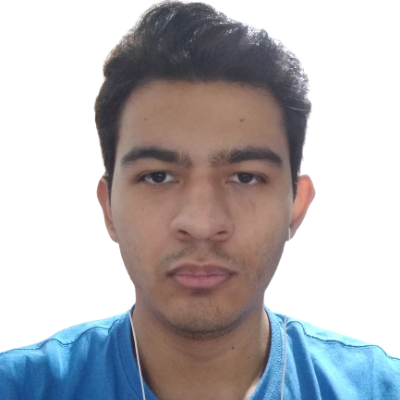
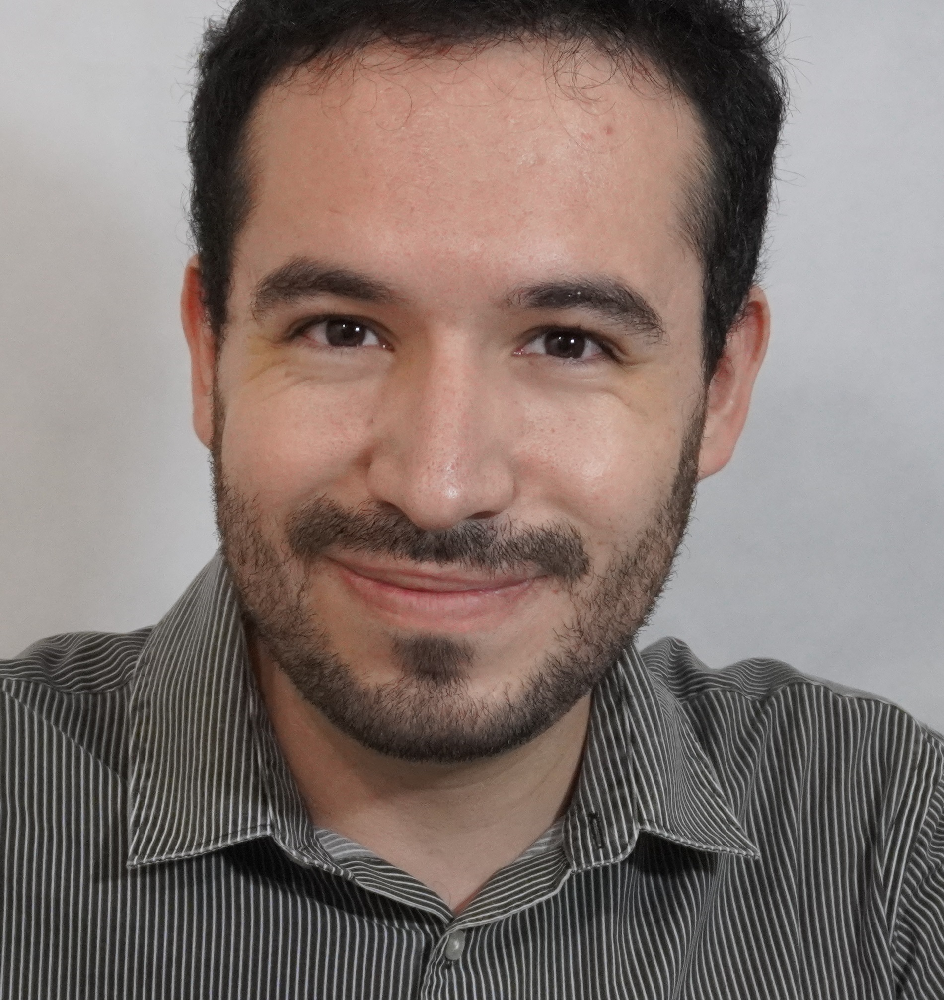
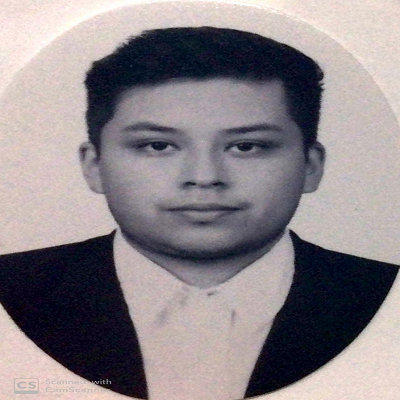
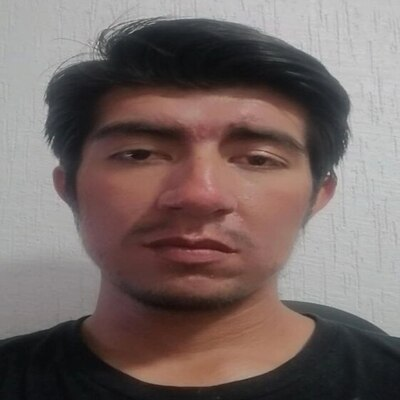

Sobre Nosotros / Vet Devs

Fernando Hernandéz
Full Stack Developer
Ingeniero en mecatrónica apasionado por el desarrollo de software,
actualmente me dedico a desarrollar aplicaciones web con React en el frontend y
Java + Spring en el backend.

Fernado Farías
Full Stack Developer
Licenciado en Ingeniería Biomédica apasionado con las tecnologías de la información;
con conocimientos de equipos médicos, redes,
y diferentes lenguajes de programación.

Josué Acevedo
Full Stack Developer
Ingeniero en sistemas computacionales, apasionado de la programación web y de la educación

Eduardo Reyes
Full Stack Developer
Licenciado en Criminología nacido en Aguascalientes,
estudiante de Ingeniería en Desarrollo de Software, con un gusto particular por el aprendizaje continuo,
la seguridad y la tecnología.
.png)
Itzel Granados
Full Stack Developer
Tecnóloga para la Información en Ciencias, sociable y creativa.
Considero las relaciones humanas muy importantes para el crecimiento personal.
Y me gusta estar en constante aprendizaje .

Axel Celaya
Full Stack Developer
Ingeniero Industrial, apasionado con las tenologías de la información, con un un gusto por el continuo aprendizaje y crecimiento continuo.